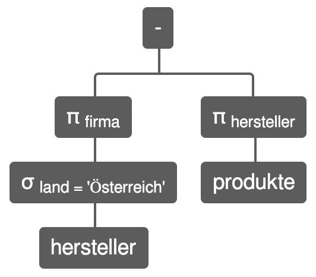

Dr.-Ing. Johannes Schildgen
johannes.schildgen@h-da.de
Datenbanken 1
Kapitel 3: Das Relationenmodell
2019-10-28


In diesem Kapitel...
- ... lernen wir, dass eine Relation eine Tabelle ist,
- ... überführen wir ER-Diagr. in ein Relationenschema,
- ... wenden wir relationale Algebra an,
- ... schauen wir uns drei Normalformen an.
Relation (= Tabelle)
Metadaten
- Name der Relation (= Tabellennname)
- Attribute (= Spalten)
- Datentypen und Eigenschaften der Attribute
(Primärschlüssel, Fremdschlüssel, ...)
Daten
- Menge von Tupeln (= Zeilen)
- Tupel besitzt einen Wert in jedem Attribut
Relation: Produkte
Metadaten
PRODUKTE(produktnummer,bezeichnung,preis,hersteller)
W(produktnummer) = integer,
W(bezeichnung) = string, usw.
Daten
PRODUKTE = {(17, Schokoriegel, 0.89, Monsterfood), ...}
Relation = Menge von Tupeln
R(A1,A2,...) ⊆ W(A1) ⨯ W(A2) ⨯ ...
- Mengen haben keine Duplikate
- Mengen haben keine Ordnung
- Ordnung der Attribute spielt keine Rolle
NULL-Werte
NULL = nicht vorhandener Wert
Mögliche Bedeutungen für Preis IS NULL:
- Der Preis ist unbekannt
- Das Produkt ist ausverkauft
- Produkte dieser Art haben keinen Preis
- Preis nur auf Anfrage
Primärschlüssel
PK ⊆ {A1, A2, ...}
- Primärschlüssel identifiziert Tupel eindeutig
- Es darf Relationen ohne Primärschlüssel geben
- Primärschlüssel ist eindeutig:
Es darf keine zwei verschiedene Tupel in der Relation geben, die in den Primärschlüsselattributen die gleichen Werte haben. - Primärschlüssel dürfen keine NULL-Werte enthalten
Beispiel: hersteller
- Der Firmenname eines Herstellers ist eindeutig
- Der Firmenname darf nicht NULL sein
- Das Land darf NULL sein
Fremdschlüssel
- Mit Fremdschlüsseln werden Beziehungen
Wert-basiert modelliert - Fremdschlüssel referenziert Attributmenge
- Fremdschlüsselattribute haben die gleichen Datentypen wie die referenzierten Attribute
- In Fremdschlüsselattributen dürfen nur Werte stehen, die auch tatsächlich in der referenzierten Relation in den referenzierten Attributen existieren; NULL ist aber auch erlaubt
Beispiel: produkte und hersteller
produkte.hersteller ist Fremdschlüssel auf hersteller.firma
Zusammengesetzte Schlüssel
produkte(hersteller,land) ist Fremdschlüssel auf hersteller(firma,land)
Zusammengesetzte Schlüssel
termine
| Datum | Uhrzeit | Raum | Dauer | Bezeichnung |
|---|---|---|---|---|
| 2019-10-14 | 14:15 | D14/404 | 90 | Vorlesung: Datenbanken 1 |
| 2019-10-21 | 16:00 | D14/112 | 90 | Praktikum: Datenbanken 1 |
personen
nehmen_teil
| PersNr | Datum | Uhrzeit | Raum |
|---|---|---|---|
| 5 | 2019-10-14 | 14:15 | D14/404 |
| 8 | 2019-10-14 | 14:15 | D14/404 |
| 5 | 2019-10-21 | 16:00 | D14/112 |
nehmen_teil.persnr ist Fremdschlüssel auf personen.persnr
nehmen_teil(datum,uhrzeit,raum) ist Fremdschl. auf termine(datum,uhrzeit,raum)
Transformation
ER-Diagramm → Relationenmodell
| ER-Diagramm | Relationenmodell | |
|---|---|---|
| Entitätstyp | → | Relation (=Tabelle) |
| Attribut | → | Attribut (=Spalte) |
| Primärschlüssel | → | Primärschlüssel |
| Sub-Attribute | → | Einzelne Attribute |
| Mehrwertiges Attribut | → | Attribut (=Spalte) |
| 1:N-Beziehung | → | Fremdschlüssel |
| N:M-Beziehung | → | Relation |
| Schwache Entitätstypen | → | Relation |
| Generalisierung | → | Relation(en) |
Entitätstyp → Relation
| Entitätstyp | → | Relation (=Tabelle) |
| Attribut | → | Attribut (=Spalte) |
| Primärschlüssel | → | Primärschlüssel |
Sub-Attribute → Einzelne Attribute
Personen(
PersNr,
Name,
Adresse_Strasse,
Adresse_PLZ,
Adresse_Ort
)
Mehrwertiges Attribut → Relation
Personen
Telefonnummern
| PersNr | Telefon |
|---|---|
| 4 | 0151-1 |
| 4 | 0151-2 |
| 5 | 0151-3 |
telefonnummern.persnr ist Fremdschlüssel auf personen.persnr
1:N-Beziehung → Fremdschlüssel
produkte.hersteller ist Fremdschlüssel auf hersteller.firma
Rekursive Beziehung → Fremdschl.
personen.chef ist Fremdschlüssel auf personen.persnr
N:M-Beziehung → Relation
kunden_bewerten_produkte.kundennr
ist Fremdschlüssel auf kunden.kundennr
kunden_bewerten_produkte.produktnr
ist Fremdschlüssel auf produkte.produktnr
Schwache Entitätstypen → Relation
Anbieter(
Anbieternr,
Anbietername
)
Handytarife(
Anbieternr,
Tarifbezeichnung,
Datenvolumen,
Preis
)
handytarife.anbieternr ist
Fremdschlüssel auf anbieter.anbieternr
Schwache Entitätstypen → Relation
Kunden(Kundennr, ...)
Produkte(Produktnr, ...)
Bewertungen(Kundennr, Produktnummer, Sterne, Text)
bewertungen.kundennr ist Fremdschlüssel auf kunden.kundennr
bewertungen.produktnr ist Fremdschlüssel auf produkte.produktnr
Ternäre Beziehung → Relation
Buchung(Kundennr, Studio_Str, Studio_Hausnr, Tarif_Bezeichnung, Datum)
buchung.kundennr ist Fremdschlüssel auf kunden.kundennr
buchung.tarif_bezeichnung ist Fremdschlüssel auf tarife.bezeichnung
buchung(studio_str, studio_hausnr) ist FK auf fitnessstudios(strasse, hausnummer)
Generalisierung im Relationenmodell
Mehrere Möglichkeiten
der Umsetzung:
- Volle Redundanz
- Hausklassenmodell
- Vertikale Partitionierung
- Hierarchierelation
Volle Redundanz
- Jeder Entitätstyp wird zur eigenständigen Relation (alle Spalten)
- Beim Einfügen in Sub-Relationen wird redundante Information in die entsprechenden Super-Relationen eingefügt.
Kunden(Kundennr, Name, E-Mail)
Privatkunden(Kundennr, Name, E-Mail, Bonuspunkte)
Geschäftskunden(Kundennr, Name, E-Mail, USt-ID)
Privatkunden.Kundennr und
Geschäftskunden.Kundennr sind Fremdschlüssel
auf Kunden.Kundennr.
Volle Redundanz
Hausklassenmodell
- Jeder Entitätstyp wird zur eigenständigen Relation (alle Spalten)
- Es wird nur in die speziellste Relation eingefügt.
Kunden(Kundennr, Name, E-Mail)
Privatkunden(Kundennr, Name, E-Mail, Bonuspunkte)
Geschäftskunden(Kundennr, Name, E-Mail, USt-ID)
Hier keine Fremdschlüssel.
Hausklassenmodell
Vertikale Partitionierung
- Jeder Entitätstyp wird zur eigenständigen Relation
(PK + spezielle Spalten)
Kunden(Kundennr, Name, E-Mail)
Privatkunden(Kundennr, Bonuspunkte)
Geschäftskunden(Kundennr, USt-ID)
Privatkunden.Kundennr und
Geschäftskunden.Kundennr sind Fremdschlüssel
auf Kunden.Kundennr.
Vertikale Partitionierung
Hierarchierelation
- Nur eine einzige Relation mit ALLEN Spalten.
- Type_Tag gibt den Entitätstypen an
Kunden(Kundennr, Name, E-Mail, Bonuspunkte, USt-ID, Type_Tag)
NOT NULL / UNIQUE
| c | mc | - |
| 1 | mc | NOT NULL |
| c | c | UNIQUE |
| 1 | c | UNIQUE NOT NULL |
NOT NULL / UNIQUE
Personen(PersNr, Name, E-Mail,
Geburtsort NOT NULL,
Kreditkarte UNIQUE)
Relationale Algebra
Die Relationale Algebra besteht aus Operationen, die auf ein oder mehreren Relationen angewendet werden können. Das Ergebnis einer solchen Operation ist wieder eine Relation.
Beispiel: Vereinigung
Mengenoperationen
- Relationen sind Mengen von Tupeln
- Mengen können vereinigt, geschnitten und voneinander subtrahiert werden
- Das geht aber nur, wenn die Mengen vereinigungsverträglich sind
Vereinigungsverträglichkeit
- Gleiche Anzahl von Spalten
- Kompatible Datentypen
⋂ Schnittmenge
Diejenigen Zeilen, die in beiden Relationen vorkommen.
\ Mengensubtraktion
Die Zeilen der ersten ohne die der zweiten Relation.
⋃ Vereinigung
Alle Zeilen aus beiden Relationen.
π Projektion
$\pi_{A_1, A_2, \dots, A_n}(R)$
Beschränkung der Relation $R$ auf die Spalten $A_1, A_2, \dots, A_n$
$\pi_{kundennr, name}(Kunden)$
π Projektion
Achtung: Duplikateliminierung!
$\pi_{hersteller}(Produkte)$
σ Selektion
$\sigma_{P}(R)$
Auswahl derjenigen Zeilen der Relation $R$, die das Kriterium $P$ erfüllen.
$\sigma_{hersteller='Monsterfood'}(Produkte)$
Selektion
$\sigma_{preis>1}(\sigma_{hersteller='Monsterfood'}(Produkte))$
Klammern weglassen:
$\sigma_{preis>1}\sigma_{hersteller='Monsterfood'}(Produkte)$
Selektionen mit AND verbinden:
$\sigma_{preis>1 \wedge hersteller='Monsterfood'}(Produkte)$
OR geht so:
$\sigma_{preis>1 \vee hersteller='Monsterfood'}(Produkte)$
Das entspricht:
$\sigma_{preis>1}(Produkte) \cup \sigma_{hersteller='Monsterfood'}(Produkte)$
Operatorabfolgen
"Von welchen Herstellern aus Österreich gibt es keine Produkte?"
- Welche Hersteller sind aus Österreich?
$\sigma_{land='Österreich'}(Hersteller)$ - Wie heißen diese Hersteller?
$\pi_{firma}\sigma_{land='Österreich'}(Hersteller)$ - Vor welchen Herstellern sind unsere Produkte?
$\pi_{hersteller}(Produkte)$ - Subtraktion von 2. und 3.:
$\pi_{firma}\sigma_{land='Österreich'}(Hersteller) \setminus \pi_{hersteller}(Produkte)$
Operatorbäume
⨯ Kartesisches Produkt
"Jedes mit jedem"
$Produkte \times Bewertungen$
Tabellenprefix
Der Name der Relation kann bei Attributen als Prefix angegeben werden.
$\sigma_{Produkte.Produktnr=Bewertungen.Produktnr}(Produkte \times Bewertungen)$
ρ Umbenennungsoperator
Relation umbenennen
$\rho_{P1}(Produkte)$
Attribut umbenennen
$\rho_{bez\leftarrow bezeichnung}(Produkte)$
Welche Produkte kosten mehr als die Spülmaschinentabs?
⋈ Join (Verbund)
Ein Join ist ein Kreuzprodukt mit anschließender Selektion, welche die Spaltenwerte der beiden Relationen vergleicht
Gleichverbund (Equi-Join)
$R \bowtie_{P}S = \sigma_{P}(R \times S)$
Welche Produkte sind von einem Hersteller aus den USA?
$\pi_{Bezeichnung}\sigma_{Land='USA'}(Produkte \bowtie_{Produkte.Hersteller=Hersteller.Firma}(Hersteller))$
Es gilt: $R ⋈ S = S ⋈ R$
Suche nach Join-Partnern
$Produkte \bowtie_{Produkte.Hersteller=Hersteller.Firma}Hersteller$
Ergebnis des Joins
$Produkte \bowtie_{Produkte.Hersteller=Hersteller.Firma}Hersteller$
Der Join ist verlustbehaftet.
Verlustfreier Join
$Produkte \bowtie_{Produkte.Hersteller=Hersteller.Firma}Hersteller$
Rekonstruktion der Tabellen
$produkte = \pi_{produktnr, bezeichnung, preis, hersteller}(V)$
$hersteller = \pi_{firma, land}(V)$
Äußerer Verbund
⋈ Innerer Verbund
Nur die Zeilen, die Join-Partner finden, sind im Ergebnis
⟕ Linker äußerer Verbund
Alle Zeilen der linken Relation sind definitiv im Ergebnis
⟖ Rechter äußerer Verbund
Alle Zeilen der rechten Relation sind definitiv im Ergebnis
⟗ Voller äußerer Verbund
Alle Zeilen beider Relation sind definitiv im Ergebnis
⟕ Linker äußerer Verbund
$Produkte ⟕_{Produkte.Hersteller=Hersteller.Firma}Hersteller$
⟖ Rechter äußerer Verbund
$Produkte ⟖_{Produkte.Hersteller=Hersteller.Firma}Hersteller$
Es gilt: $R ⟖ S = S ⟕ R$
⟗ Voller äußerer Verbund
$Produkte ⟗_{Produkte.Hersteller=Hersteller.Firma}Hersteller$
Es gilt: $R ⟗ S = S ⟗ R$
Join-Varianten
Innerer / linker / rechter / voller äußerer Join
$R \bowtie_{P} S$ $R ⟕_{P} S$ $R ⟖_{P} S$ $R ⟗_{P} S$
Gleichverbund (Equi-Join)
$R \bowtie_{R.a = S.x \wedge R.b = S.y \wedge \dots} S$
Theta-Join
$R \bowtie_{R.a \theta S.x \wedge \dots} S$ mit $\theta \in \{<,≤,=,≠,≥,>\}$
Beispiele: Equi-/Theta-Joins
Finde zu jedem Produkt seinen Hersteller:
$produkte \bowtie_{Produkte.Hersteller=Hersteller.Firma}hersteller$
Finde zu jedem Produkt teurere Produkte als es selbst:
$\rho_{P1}(produkte) \bowtie_{P1.preis < P2.preis} \rho_{P2}(produkte)$
Join-Varianten
Natürlicher Verbund (natural Join)
$R \bowtie R$
Gleichverbund über diejenigen Attribute, die mit gleichem Namen in beiden Relationen vorkommen. Im Ergebnis sind solche Attribute nur einmal vorhanden.
Self-Join
$R \bowtie_P R$
Semi-Join
$R \ltimes_P S = \pi_{R.*}(R \bowtie_P S)$